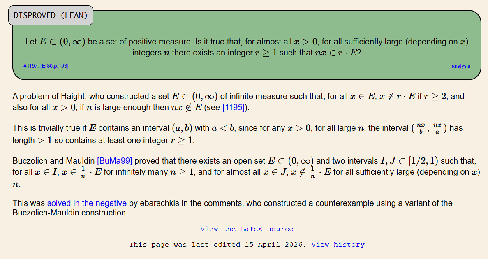

Erdős Problem #1197

1.) The Beginning?
So you start out with a measurable set \(E\) inside \((0,\infty)\) that has positive measure (measure just means the interval's length). Now the measure extends that idea to sets with gaps (the gaps can be arbitrarily widely scattered). For any measurable set \(E\) of positive real numbers with positive measure, let us consider the sets \(rE=\{re:e\in E\}\), where \(r\) ranges over all positive integers. J.A. Haight then conjectured whether every sufficiently late multiple of any positive real number \(x\) must belong to some \(rE\), for almost every choice of \(x\). Erdős later mentioned this problem in his 1980 paper "A SURVEY OF PROBLEMS IN COMBINATORIAL NUMBER THEORY".
In other words, is there a positive integer \(N(x)\) for almost every positive real \(x\), such that every positive integer \(n\ge N(x)\) has some positive integer \(r\) with \(nx\in rE\)? The threshold can be different for \(x\) and the condition of "almost every" allows a set of exceptional \(x\) of measure zero but we cannot exlude an interval of positive length.
2.) the lore
If \(E\) contains an interval \((a,b)\), where \(0<a<b\), we can find a positive integer \(r\) strictly between \(nx/b\) and \(nx/a\). THe width of this interval grows with \(n\), and once it is larger than \(1\), it is guaranteed to contain an integer \(r\) and since \(a<nx/r<b\), we can deduce that \(nx/r\) is in \(E\).
Now this specific argument applies for all fixed positive \(x\) and all sufficiently large integers \(n\). Problem is however, that the positive measure alone won't guarantee us that this works for any interval. A set can retain positive length after having holes removed from every neighborhood. Now Haight had already constructed a set of infinite measure for which every \(x>0\) has only finitely many multiples \(nx\) in the set. His set also contains no pair of distinct points whose ratio is an integer (this is discussed more in detail in Erdős Problem #\(1195\)), however the annoying thing that we have to miss EVERY stretched copy \(rE\), not just \(E\), and it get even worse, we have to miss it all at the same time.
Skip 21 years into the future and we have Buczolich and Mauldin who provide us with a way to build an open set that the integer multiples of almost every point in another interval visit finitely often. Now, as cool as this might sound, it still isn't enough to be a counterexample since it contains an interval. Instead, we need a lemma behind their construction, which builds sets that catch multiples from one interval while barely affecting another.
3.) how did we get here?
So when I got around to this problem, I was intruiged at first, since it just came out in the new batch of problems that Thomas Bloom (the admin and maintainer) added to the site. I just entered school holidays so, I thought to myself another Erdős Problem won't hurt. At that point OpenAI's new models which they provided me were an enormous step up than what they were like at the start of the year. Not only could the models now come up with rigorous theorems and proofs, but they could also autonomously explore various proof ideas. Before, you had to get the models to manually explore a very specific avenue using specific ideas in a very specific way. You had to be extremely delicate with the instructions, since if you didn't explain precisely what you wanted, it would probably spit out nonsense. But with the new model, you could just ask it to explore a very rough idea or concept, and it will go out and reason for multiple hours and give you a very concrete answer on what worked, what didn't and even suggest new ideas. So point being, you were no longer forced to babysit the model towards what you wanted, but now it could actively explore an idea for you. Sorry if I am going off on a tangent, but I think the broader thing that has changed is that the whole "experience" of mathematics has changed from having to go down each proof route manually, to sending out the clankers to do it for you. In other words the work itself has radically transitioned from manual grunt work to more high-level management. Anyways, I had the new OpenAI model try various ideas of mine, until one worked, specifically it reused the Buczolich-Mauldin lemma, which took a complement of the points affected by their sets. I then reran the argument multiple times through the models, since proofchecking was another thing these models incredibly improved at. I then fed the counterexample into the new Aristotle models, which then formally proved it (although with an assumption). I then uploaded the solutions to the site and clearly noted the remaining lean gap which was a implementation of the prime number theorem. Luckily Tom de Groot, who had been extensively working on a lean implementation of the PNT, was there to help and after two days managed to complete the lean proof.
4.) some assembly required
Now for the nitty-gritty part. The difficulty is the freedom to choose \(r\). Finding a large \(n\) with \(nx\notin E\) does very little when \(nx\) might still belong to \(2E\), or \(3E\), or any other integer dilation. So we want a forbidden set \(F\) that all the copies \(rE\) avoid, but that the multiples of every \(x\) in some interval keep hitting.
This suggests building \(F\) first. Once we have it, remove from a starting interval every point whose multiples can reach \(F\). Whatever remains will be our \(E\). The problem is keeping enough of that interval after all the removals. That is where Buczolich and Mauldin's estimate does the heavy lifting.
Two intervals with very different jobs
Take
We will keep \(E\) inside \(I\). The counterexample will fail at every point of \(J\). To describe what gets removed, write
A point belongs to \(\Phi(H)\) precisely when it lies in \([1/2,1)\) and some positive integer multiple of it lands in \(H\). I will call this the shadow of \(H\): shrink \(H\) by every positive integer and collect the points those copies cover in our reference interval.
The Buczolich–Mauldin lemma provides open sets \(H_k\) in disjoint ranges \((2^{\nu_k-1},2^{\nu_k})\), with the integers \(\nu_k\) increasing. They satisfy
Every point of \(J\) has a multiple in every \(H_k\). Meanwhile, the shadow inside \(I\) has a measure that shrinks geometrically. Those are the two properties we need. The estimate concerns the shadow inside \(I\); making \(H_k\) itself small would not by itself control all its shrunken copies.
Why those sets can exist
The difficult construction here belongs to Buczolich and Mauldin. They work in logarithmic coordinates, where multiplying by an integer becomes adding its logarithm. This lets them use Kronecker's approximation theorem to arrange many shifts at once.
Roughly, selected primes give shifts spread around a fine periodic grid. For any point in \(J\), one of those shifts moves it into a narrow target interval. The integers that could take a point of \(I\) into the same shell are arranged to have shifts close to zero modulo that grid. Their shadows therefore overlap in narrow regions, instead of spreading across \(I\).
The prime number theorem supplies enough primes in the required range. The primes are larger than the competing integers, so unique prime factorization gives the compatibility condition needed for Kronecker's theorem. The exact ranges and error bounds are in the original proof. This is how one set can catch a multiple of every point in \(J\) while casting such a small shadow in \(I\).
Remove the shadows
Choose a starting index \(K\) large enough for the lemma to apply and for
Now define
This is the move my counterexample uses. We delete every point in \(I\) that could send an integer multiple into any of the shells. The total amount deleted is at most the sum of the individual shadow measures, so
That is ordinary countable subadditivity of measure. No independence assumption is needed. All these sets are measurable, since the shells are open and the shadows are countable unions of scaled open sets, restricted to an interval.
Suppose \(y\in F\) could also be written as \(y=re\), where \(e\in E\) and \(r\geq1\) is an integer. Then an integer multiple of \(e\) reaches \(F\), so \(e\in\Phi(F)\). But those are precisely the points we removed from \(I\). Therefore
One definition has excluded every possible \(r\) at once. There is no need to chase the stretched copies individually.
Infinitely many failures
Fix any \(x\in J\). For each \(k\), the lemma gives an integer \(n_k\) with \(n_kx\in H_k\). The shells are disjoint, so these integers are distinct: the same multiple cannot sit in two disjoint sets. Consequently there are infinitely many such \(n_k\), and they are unbounded.
Each \(n_kx\) belongs to \(F\), which misses every \(rE\). Thus
This is exactly the obstruction we wanted. No matter how far out we put the threshold, another failing \(n\) comes along. The construction works by combining repeated visits on one interval with a small total removal on another. The remaining proof is bookkeeping; making that combination available was the job of the earlier lemma.
5.) End of the line
The answer is negative. The set \(E\) has positive measure, but every \(x\) in the entire interval \([16/25,2/3]\) has infinitely many multiples outside every integer dilation of \(E\). So even allowing a different \(r\) each time cannot rescue the eventual covering claim.
My contribution was to repurpose the Buczolich–Mauldin shells through the construction \(E=I\setminus\Phi(F)\), and to develop the counterexample with GPT Pro and an initial Aristotle-assisted formalization. The shell lemma, its Kronecker argument, and its prime-number input were existing mathematics. Tom de Groot supplied the subsequent work resolving the original formalization gap.
One detail about the linked Lean repository: it records that gap as resolved, while its PNTBridge file represents two separately proved PNT+ results with admit placeholders. The README explains this dependency arrangement. The mathematical proof uses the established results; the repository's shortcut for importing them should be kept distinct from a build with no admitted statements.
My paper: A negative answer to an eventual covering question for rational dilates
Lean formalization and Tom de Groot's completion
Problem statement and forum discussion
Buczolich and Mauldin: On the convergence of \(\sum_{n=1}^{\infty}f(nx)\) for measurable functions